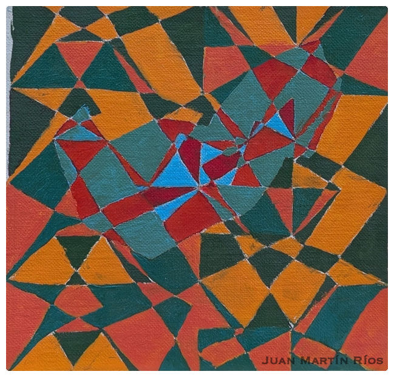
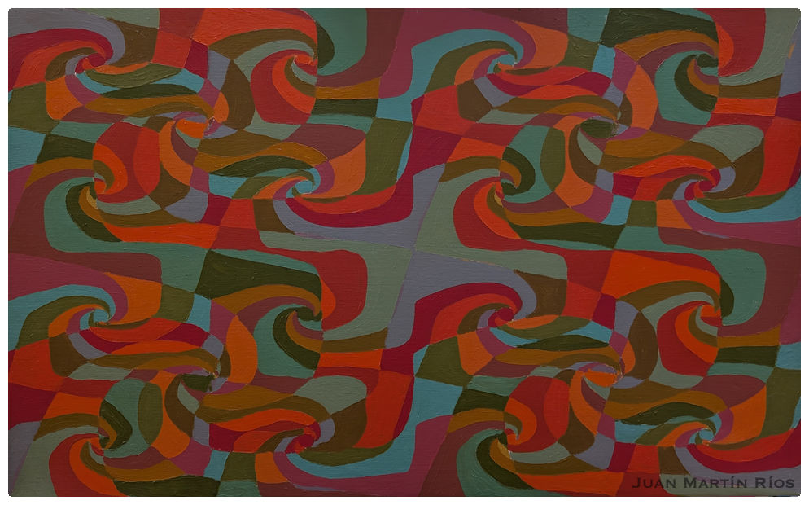
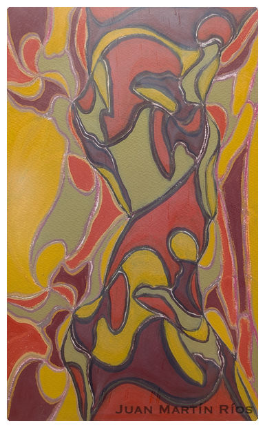
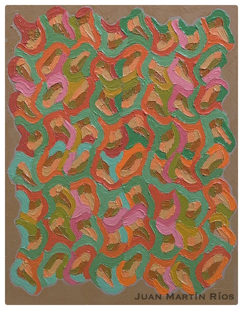
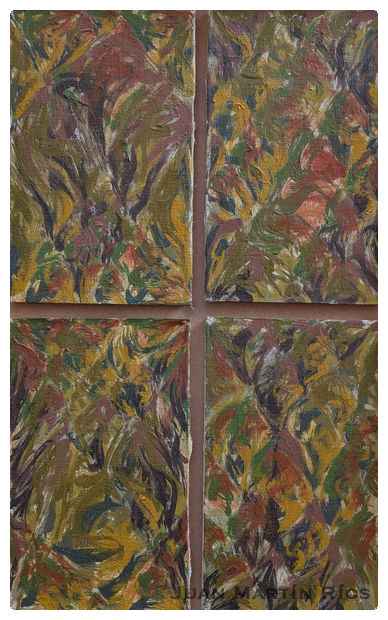
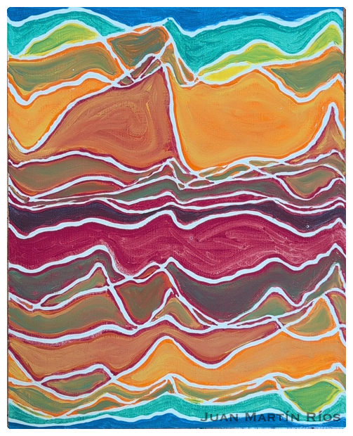
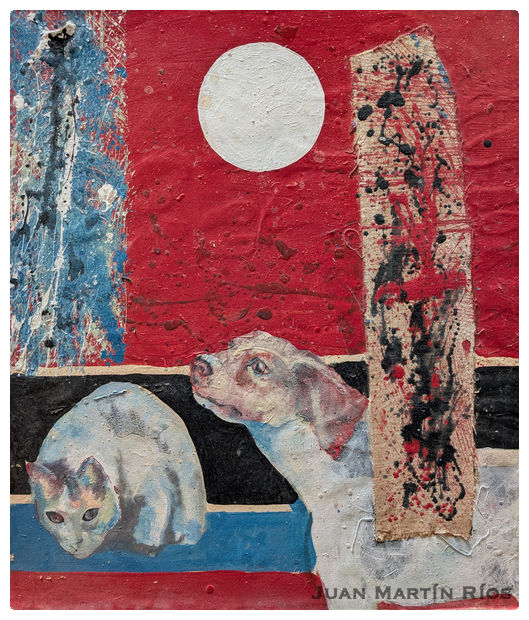
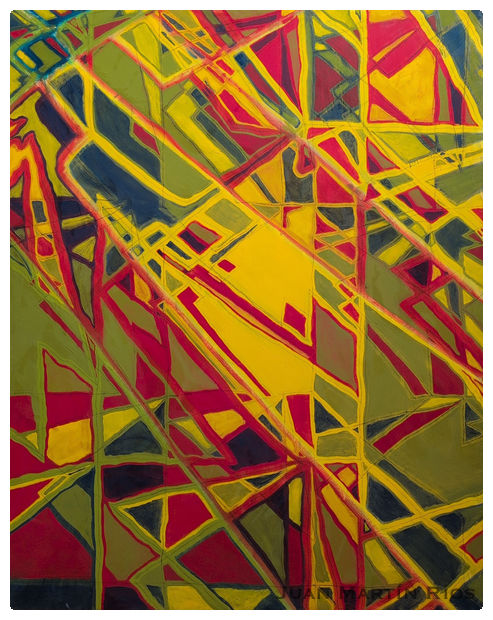

Catálogo de series
Proyectos
Cada proyecto es una gramática distinta: un módulo que se repite, una onda que se propaga, un rostro que aflora. El catálogo sigue en proceso de digitalización — gracias por la paciencia.

El acordenroscado en los conjuntos flotantes: la frontera entre dos mundos.

Espirales de puntos de color que giran sobre el negro como galaxias íntimas.

Rostros chamánicos que emergen de la trama, tras Malcolm Lowry.

Campos concéntricos, interferencias: el paisaje de onda hecho visible.

Laberintos negro sobre negro, huellas de un campo que ya pasó.

Tinta y acuarela: la costa, la espuma y la luz cristalizadas.

La figuración primera: ballenas, lunas y personajes de otro mundo.

Piezas sueltas, homenajes y desvíos del camino principal.
en digitalización
La mirada fotográfica del pintor. Visítanos pronto para descubrirla.